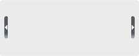

#main

所谓“流体—弹性混合”布局指的是通过以“em”来作为容器宽度的单位（弹体），而以“百分比”来做为容器最大宽度的单位（流体）。这样就能保证容器宽度会按照字体的大小自适应而不会超出浏览器窗体的显示大小！
#secondary
所谓“流体—弹性混合”布局指的是通过以“em”来作为容器宽度的单位（弹体），而以“百分比”来做为容器最大宽度的单位（流体）。这样就能保证容器宽度会按照字体的大小自适应而不会超出浏览器窗体的显示大小！